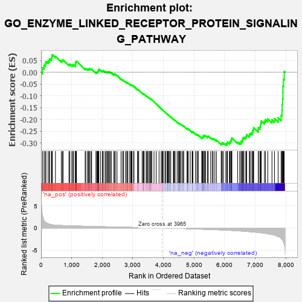
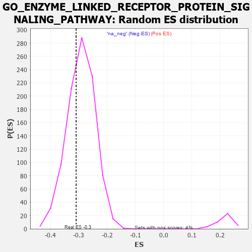

| | | Dataset | 7d |
| Phenotype | NoPhenotypeAvailable |
| Upregulated in class | na_neg |
| GeneSet | GO_ENZYME_LINKED_RECEPTOR_PROTEIN_SIGNALING_PATHWAY |
| Enrichment Score (ES) | -0.30966467 |
| Normalized Enrichment Score (NES) | -1.059497 |
| Nominal p-value | 0.35036495 |
| FDR q-value | 0.79113984 |
| FWER p-Value | 1.0 |
Table: GSEA Results Summary

Fig 1: Enrichment plot: GO_ENZYME_LINKED_RECEPTOR_PROTEIN_SIGNALING_PATHWAY
Profile of the Running ES Score & Positions of GeneSet Members on the Rank Ordered List
| PROBE | GENE SYMBOL | GENE_TITLE | RANK IN GENE LIST | RANK METRIC SCORE | RUNNING ES | CORE ENRICHMENT | | 1 | TGFB3 | | | 49 | 2.654 | 0.0193 | No |
| 2 | IRS1 | | | 98 | 1.659 | 0.0291 | No |
| 3 | HTRA4 | | | 137 | 1.341 | 0.0371 | No |
| 4 | CSRP3 | | | 161 | 1.186 | 0.0456 | No |
| 5 | SMAD5 | | | 231 | 0.979 | 0.0461 | No |
| 6 | TBX20 | | | 267 | 0.880 | 0.0501 | No |
| 7 | HGF | | | 276 | 0.870 | 0.0575 | No |
| 8 | DLL1 | | | 337 | 0.760 | 0.0571 | No |
| 9 | GSK3A | | | 351 | 0.745 | 0.0626 | No |
| 10 | ARNT | | | 357 | 0.741 | 0.0691 | No |
| 11 | RGMB | | | 368 | 0.732 | 0.0748 | No |
| 12 | LRP1 | | | 470 | 0.648 | 0.0681 | No |
| 13 | HES5 | | | 661 | 0.571 | 0.0491 | No |
| 14 | FST | | | 698 | 0.560 | 0.0499 | No |
| 15 | ID1 | | | 719 | 0.555 | 0.0526 | No |
| 16 | NLK | | | 911 | 0.504 | 0.0329 | No |
| 17 | PDCD4 | | | 941 | 0.497 | 0.0339 | No |
| 18 | MEN1 | | | 1003 | 0.483 | 0.0307 | No |
| 19 | AKT1 | | | 1040 | 0.476 | 0.0307 | No |
| 20 | AP3S1 | | | 1063 | 0.471 | 0.0324 | No |
| 21 | NUP93 | | | 1127 | 0.459 | 0.0287 | No |
| 22 | SRC | | | 1128 | 0.459 | 0.0331 | No |
| 23 | FIBP | | | 1129 | 0.458 | 0.0375 | No |
| 24 | NCK2 | | | 1131 | 0.458 | 0.0418 | No |
| 25 | MTSS1 | | | 1149 | 0.454 | 0.0440 | No |
| 26 | GAB1 | | | 1158 | 0.453 | 0.0473 | No |
| 27 | PTBP1 | | | 1441 | 0.402 | 0.0149 | No |
| 28 | VASN | | | 1459 | 0.398 | 0.0165 | No |
| 29 | INHBB | | | 1514 | 0.388 | 0.0133 | No |
| 30 | SOS1 | | | 1547 | 0.384 | 0.0129 | No |
| 31 | FZD1 | | | 1574 | 0.379 | 0.0132 | No |
| 32 | PTPRT | | | 1578 | 0.378 | 0.0165 | No |
| 33 | CDK4 | | | 1626 | 0.370 | 0.0140 | No |
| 34 | ESRP1 | | | 1653 | 0.364 | 0.0141 | No |
| 35 | STRAP | | | 1793 | 0.339 | -0.0005 | No |
| 36 | SGPL1 | | | 1820 | 0.334 | -0.0006 | No |
| 37 | GATA4 | | | 1837 | 0.330 | 0.0005 | No |
| 38 | AP2S1 | | | 1846 | 0.329 | 0.0026 | No |
| 39 | SMAD4 | | | 1860 | 0.326 | 0.0041 | No |
| 40 | NUP62 | | | 1871 | 0.324 | 0.0059 | No |
| 41 | NEO1 | | | 1879 | 0.323 | 0.0081 | No |
| 42 | NCOA5 | | | 1884 | 0.322 | 0.0107 | No |
| 43 | PAK3 | | | 1889 | 0.322 | 0.0133 | No |
| 44 | CUL5 | | | 1947 | 0.314 | 0.0090 | No |
| 45 | FOXO4 | | | 2004 | 0.304 | 0.0047 | No |
| 46 | RAF1 | | | 2011 | 0.303 | 0.0068 | No |
| 47 | VPS25 | | | 2033 | 0.300 | 0.0070 | No |
| 48 | FOXD1 | | | 2093 | 0.292 | 0.0022 | No |
| 49 | BMP7 | | | 2107 | 0.290 | 0.0034 | No |
| 50 | ATOH8 | | | 2145 | 0.285 | 0.0013 | No |
| 51 | DDR1 | | | 2176 | 0.280 | 0.0002 | No |
| 52 | SYK | | | 2186 | 0.278 | 0.0017 | No |
| 53 | C2CD5 | | | 2204 | 0.276 | 0.0022 | No |
| 54 | CREB1 | | | 2243 | 0.269 | -0.0001 | No |
| 55 | SHC2 | | | 2263 | 0.266 | -0.0000 | No |
| 56 | WASF1 | | | 2303 | 0.259 | -0.0025 | No |
| 57 | NCBP2 | | | 2383 | 0.248 | -0.0103 | No |
| 58 | PELO | | | 2386 | 0.247 | -0.0082 | No |
| 59 | HIPK2 | | | 2389 | 0.247 | -0.0061 | No |
| 60 | MET | | | 2430 | 0.240 | -0.0089 | No |
| 61 | FRS3 | | | 2482 | 0.229 | -0.0133 | No |
| 62 | VAV3 | | | 2614 | 0.210 | -0.0281 | No |
| 63 | GRB14 | | | 2666 | 0.204 | -0.0327 | No |
| 64 | ZGPAT | | | 2694 | 0.200 | -0.0343 | No |
| 65 | FNTA | | | 2755 | 0.190 | -0.0402 | No |
| 66 | FER | | | 2803 | 0.183 | -0.0445 | No |
| 67 | BRK1 | | | 2805 | 0.183 | -0.0429 | No |
| 68 | PHF14 | | | 2838 | 0.178 | -0.0453 | No |
| 69 | FGFR2 | | | 2895 | 0.167 | -0.0509 | No |
| 70 | ACVR1 | | | 2932 | 0.161 | -0.0540 | No |
| 71 | LIFR | | | 2948 | 0.158 | -0.0544 | No |
| 72 | SOCS4 | | | 2953 | 0.157 | -0.0534 | No |
| 73 | SHB | | | 2974 | 0.154 | -0.0545 | No |
| 74 | WNT4 | | | 3023 | 0.146 | -0.0592 | No |
| 75 | LEF1 | | | 3037 | 0.144 | -0.0595 | No |
| 76 | SFRP5 | | | 3154 | 0.129 | -0.0732 | No |
| 77 | GCNT2 | | | 3162 | 0.128 | -0.0729 | No |
| 78 | TRIO | | | 3192 | 0.123 | -0.0754 | No |
| 79 | SMAD3 | | | 3303 | 0.105 | -0.0886 | No |
| 80 | SMAD1 | | | 3337 | 0.099 | -0.0919 | No |
| 81 | UBE2O | | | 3348 | 0.097 | -0.0923 | No |
| 82 | TAB1 | | | 3351 | 0.097 | -0.0916 | No |
| 83 | SMAD7 | | | 3369 | 0.093 | -0.0929 | No |
| 84 | AP2A2 | | | 3433 | 0.085 | -0.1002 | No |
| 85 | PTPRK | | | 3454 | 0.084 | -0.1019 | No |
| 86 | HGS | | | 3476 | 0.080 | -0.1039 | No |
| 87 | FES | | | 3501 | 0.077 | -0.1062 | No |
| 88 | PIN1 | | | 3543 | 0.069 | -0.1108 | No |
| 89 | DMRT1 | | | 3546 | 0.068 | -0.1104 | No |
| 90 | FUT8 | | | 3551 | 0.067 | -0.1103 | No |
| 91 | PARD3 | | | 3584 | 0.063 | -0.1138 | No |
| 92 | TNS2 | | | 3588 | 0.062 | -0.1136 | No |
| 93 | MAPK3 | | | 3589 | 0.062 | -0.1130 | No |
| 94 | CBL | | | 3621 | 0.056 | -0.1165 | No |
| 95 | EPN2 | | | 3691 | 0.045 | -0.1249 | No |
| 96 | SKI | | | 3762 | 0.032 | -0.1336 | No |
| 97 | DGKQ | | | 3856 | 0.020 | -0.1454 | No |
| 98 | NRG3 | | | 3925 | 0.005 | -0.1541 | No |
| 99 | PPM1A | | | 3953 | 0.002 | -0.1576 | No |
| 100 | IGF1R | | | 3970 | -0.002 | -0.1596 | No |
| 101 | CHMP6 | | | 3977 | -0.003 | -0.1604 | No |
| 102 | PARP1 | | | 4014 | -0.010 | -0.1649 | No |
| 103 | SFRP2 | | | 4065 | -0.018 | -0.1712 | No |
| 104 | CSF1 | | | 4074 | -0.019 | -0.1720 | No |
| 105 | ABL1 | | | 4125 | -0.027 | -0.1782 | No |
| 106 | PLCE1 | | | 4127 | -0.028 | -0.1781 | No |
| 107 | CRK | | | 4139 | -0.031 | -0.1792 | No |
| 108 | HNF4A | | | 4157 | -0.034 | -0.1810 | No |
| 109 | AP2B1 | | | 4185 | -0.039 | -0.1841 | No |
| 110 | STAM2 | | | 4193 | -0.041 | -0.1846 | No |
| 111 | ARPC2 | | | 4232 | -0.047 | -0.1891 | No |
| 112 | GPC1 | | | 4238 | -0.048 | -0.1893 | No |
| 113 | CD109 | | | 4325 | -0.064 | -0.1997 | No |
| 114 | OPA1 | | | 4330 | -0.065 | -0.1996 | No |
| 115 | ADRB2 | | | 4352 | -0.068 | -0.2017 | No |
| 116 | ARF4 | | | 4383 | -0.073 | -0.2048 | No |
| 117 | CDC37 | | | 4446 | -0.084 | -0.2120 | No |
| 118 | HIP1 | | | 4485 | -0.092 | -0.2160 | No |
| 119 | ILK | | | 4510 | -0.096 | -0.2182 | No |
| 120 | SNW1 | | | 4514 | -0.096 | -0.2176 | No |
| 121 | NPTN | | | 4519 | -0.098 | -0.2172 | No |
| 122 | NTRK2 | | | 4543 | -0.104 | -0.2192 | No |
| 123 | APC | | | 4558 | -0.107 | -0.2199 | No |
| 124 | SNX25 | | | 4606 | -0.119 | -0.2248 | No |
| 125 | GATA3 | | | 4614 | -0.120 | -0.2246 | No |
| 126 | FGFR3 | | | 4656 | -0.129 | -0.2286 | No |
| 127 | ARPC3 | | | 4659 | -0.129 | -0.2276 | No |
| 128 | PLCG1 | | | 4770 | -0.151 | -0.2403 | No |
| 129 | RTN4 | | | 4783 | -0.154 | -0.2404 | No |
| 130 | RAB14 | | | 4784 | -0.155 | -0.2389 | No |
| 131 | FBXW7 | | | 4816 | -0.161 | -0.2413 | No |
| 132 | SIK2 | | | 4875 | -0.172 | -0.2472 | No |
| 133 | FZD4 | | | 4940 | -0.186 | -0.2536 | No |
| 134 | EP300 | | | 4941 | -0.186 | -0.2518 | No |
| 135 | ARAP1 | | | 4963 | -0.191 | -0.2527 | No |
| 136 | PDPK1 | | | 5043 | -0.207 | -0.2609 | No |
| 137 | ITSN1 | | | 5094 | -0.222 | -0.2652 | No |
| 138 | MMP9 | | | 5108 | -0.227 | -0.2647 | No |
| 139 | FLCN | | | 5140 | -0.235 | -0.2664 | No |
| 140 | IDE | | | 5252 | -0.258 | -0.2782 | No |
| 141 | PTEN | | | 5262 | -0.261 | -0.2768 | No |
| 142 | EPHA4 | | | 5273 | -0.265 | -0.2756 | No |
| 143 | MAGI2 | | | 5295 | -0.269 | -0.2757 | No |
| 144 | FKBP8 | | | 5296 | -0.270 | -0.2731 | No |
| 145 | RAB7A | | | 5302 | -0.271 | -0.2711 | No |
| 146 | EPN1 | | | 5304 | -0.272 | -0.2686 | No |
| 147 | ELMO2 | | | 5341 | -0.283 | -0.2705 | No |
| 148 | EPHA1 | | | 5349 | -0.285 | -0.2687 | No |
| 149 | GRIN1 | | | 5381 | -0.291 | -0.2699 | No |
| 150 | CBLB | | | 5445 | -0.306 | -0.2750 | No |
| 151 | FRK | | | 5451 | -0.307 | -0.2727 | No |
| 152 | LRIG2 | | | 5460 | -0.310 | -0.2708 | No |
| 153 | FGFR1 | | | 5543 | -0.332 | -0.2781 | No |
| 154 | GFRA1 | | | 5594 | -0.342 | -0.2813 | No |
| 155 | ROR2 | | | 5626 | -0.353 | -0.2819 | No |
| 156 | CD63 | | | 5680 | -0.370 | -0.2851 | No |
| 157 | TIA1 | | | 5731 | -0.386 | -0.2878 | No |
| 158 | ARPC4 | | | 5886 | -0.430 | -0.3035 | No |
| 159 | DOCK1 | | | 5908 | -0.438 | -0.3020 | No |
| 160 | STK11 | | | 5922 | -0.443 | -0.2994 | No |
| 161 | SH2B1 | | | 5963 | -0.459 | -0.3002 | No |
| 162 | RAC1 | | | 6036 | -0.484 | -0.3048 | No |
| 163 | USP9Y | | | 6075 | -0.498 | -0.3049 | Yes |
| 164 | FBN1 | | | 6080 | -0.499 | -0.3006 | Yes |
| 165 | UBB | | | 6090 | -0.503 | -0.2969 | Yes |
| 166 | ROCK1 | | | 6152 | -0.520 | -0.2997 | Yes |
| 167 | EGR1 | | | 6165 | -0.527 | -0.2962 | Yes |
| 168 | MYO1E | | | 6200 | -0.537 | -0.2954 | Yes |
| 169 | INSR | | | 6204 | -0.538 | -0.2906 | Yes |
| 170 | SMAD2 | | | 6216 | -0.541 | -0.2868 | Yes |
| 171 | MVP | | | 6223 | -0.543 | -0.2823 | Yes |
| 172 | CDC42 | | | 6236 | -0.548 | -0.2786 | Yes |
| 173 | PTPRD | | | 6423 | -0.629 | -0.2965 | Yes |
| 174 | WDR54 | | | 6491 | -0.658 | -0.2988 | Yes |
| 175 | KANK1 | | | 6536 | -0.678 | -0.2979 | Yes |
| 176 | DDR2 | | | 6542 | -0.681 | -0.2920 | Yes |
| 177 | ROBO1 | | | 6577 | -0.699 | -0.2896 | Yes |
| 178 | INHBE | | | 6584 | -0.701 | -0.2836 | Yes |
| 179 | LTBP2 | | | 6600 | -0.712 | -0.2787 | Yes |
| 180 | WWTR1 | | | 6631 | -0.729 | -0.2756 | Yes |
| 181 | PAK1 | | | 6691 | -0.757 | -0.2759 | Yes |
| 182 | EGFR | | | 6708 | -0.765 | -0.2706 | Yes |
| 183 | GSK3B | | | 6719 | -0.768 | -0.2644 | Yes |
| 184 | ADAM9 | | | 6808 | -0.819 | -0.2679 | Yes |
| 185 | GIPC1 | | | 6819 | -0.826 | -0.2612 | Yes |
| 186 | AHI1 | | | 6860 | -0.848 | -0.2582 | Yes |
| 187 | PTPRF | | | 6908 | -0.872 | -0.2558 | Yes |
| 188 | CSPG4 | | | 6918 | -0.878 | -0.2485 | Yes |
| 189 | GHSR | | | 6937 | -0.894 | -0.2422 | Yes |
| 190 | FAT4 | | | 6948 | -0.901 | -0.2348 | Yes |
| 191 | CSH1 | | | 7098 | -0.995 | -0.2444 | Yes |
| 192 | RYK | | | 7102 | -1.000 | -0.2352 | Yes |
| 193 | DDX5 | | | 7152 | -1.037 | -0.2315 | Yes |
| 194 | AR | | | 7169 | -1.046 | -0.2235 | Yes |
| 195 | PTPRJ | | | 7180 | -1.054 | -0.2146 | Yes |
| 196 | OVOL2 | | | 7197 | -1.068 | -0.2064 | Yes |
| 197 | MSX2 | | | 7299 | -1.171 | -0.2081 | Yes |
| 198 | NGEF | | | 7335 | -1.209 | -0.2009 | Yes |
| 199 | UBC | | | 7410 | -1.274 | -0.1982 | Yes |
| 200 | SHOC2 | | | 7546 | -1.463 | -0.2015 | Yes |
| 201 | PDCD6 | | | 7630 | -1.615 | -0.1966 | Yes |
| 202 | CASP3 | | | 7747 | -1.902 | -0.1932 | Yes |
| 203 | DLX5 | | | 7845 | -2.378 | -0.1828 | Yes |
| 204 | MMP2 | | | 7875 | -2.574 | -0.1617 | Yes |
| 205 | FYN | | | 7881 | -2.622 | -0.1371 | Yes |
| 206 | CAV3 | | | 7896 | -2.739 | -0.1125 | Yes |
| 207 | PLCB1 | | | 7904 | -2.841 | -0.0860 | Yes |
| 208 | FBN2 | | | 7906 | -2.873 | -0.0584 | Yes |
| 209 | VWA2 | | | 7927 | -3.205 | -0.0301 | Yes |
| 210 | XIAP | | | 7947 | -3.696 | 0.0031 | Yes |
Table: GSEA details [plain text format]

Fig 2: GO_ENZYME_LINKED_RECEPTOR_PROTEIN_SIGNALING_PATHWAY: Random ES distribution
Gene set null distribution of ES for GO_ENZYME_LINKED_RECEPTOR_PROTEIN_SIGNALING_PATHWAY